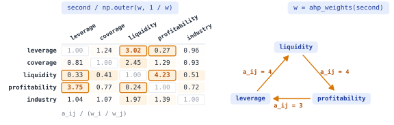

Expert scorecards#
An expert scorecard sets its weights by judgment instead of fitting them to data. It is the tool for a portfolio with too few defaults for a statistical model, such as large corporates, small businesses or a new product, where credit analysts score a handful of factors and a committee decides how much each factor counts. The analytic hierarchy process (AHP) makes that decision less arbitrary: the committee compares the factors two at a time, and the comparisons give the weights together with a check that the comparisons agree with each other.
An expert scorecard replaces the fitting steps of Variable selection and Scorecard when there is no data to fit to. Once outcomes exist, its score is evaluated with Model performance and its grades are calibrated to default rates with Calibration. ahp_weights() turns a matrix of pairwise comparisons into weights, ahp_consistency() measures how well the comparisons agree, and combine_weights() joins the weights of factors and sub-factors into global weights.
Definitions#
A comparison is a judgment on Saaty’s scale. For two factors \(i\) and \(j\), \(a_{ij}\) says how many times more important \(i\) is than \(j\), and \(a_{ji} = 1 / a_{ij}\) says the same the other way round:
\(a_{ij}\) |
Meaning |
|---|---|
1 |
Equally important |
3 |
Moderately more important |
5 |
Strongly more important |
7 |
Very strongly more important |
9 |
Extremely more important |
2, 4, 6, 8 |
Intermediate values |
The \(n \times n\) matrix \(A = (a_{ij})\) of all comparisons has a diagonal of 1 and reciprocal entries. If the judgments agree with each other, so that \(a_{ij} a_{jk} = a_{ik}\) for every three factors, then \(a_{ij} = w_i / w_j\) for weights \(w\) that sum to 1, and the matrix is consistent. Judgments are rarely quite consistent, so ahp_weights() estimates the weights in one of two ways, which agree on a consistent matrix. Saaty’s estimate is the principal eigenvector,
and the geometric method scales the geometric means of the rows of the matrix to sum to 1:
For a reciprocal matrix, \(\lambda_{\max} \ge n\), with equality exactly when the matrix is consistent. ahp_consistency() therefore measures the inconsistency by the consistency index and compares it with the index that random judgments give on average, the random index \(\mathrm{RI}\), which depends only on the number of factors:
The ratio \(\mathrm{CR}\) is the consistency ratio. Saaty’s rule of thumb is that judgments with a ratio of 0.1 or less are consistent enough to use, and Saaty (1994) later tightened the limit to 0.05 for three factors and 0.08 for four. For three to fifteen factors the random index, in the table of Tone (1986) that Obata and Shiraishi list, is 0.58, 0.90, 1.12, 1.24, 1.32, 1.41, 1.45, 1.49, 1.51, 1.53, 1.56, 1.57 and 1.59. Saaty’s books print 1.48 for twelve factors, which is generally taken for a typographical error. Every comparison of one or two factors is consistent, so their ratio is 0.
A worked example#
Three factors of a corporate scorecard are compared. The analyst judges sales to be twice as important as margin and four times as important as leverage, and margin to be twice as important as leverage:
>>> import numpy as np
>>> import pandas as pd
>>> from kivi.expert import ahp_consistency, ahp_weights
>>> factors = ["sales", "margin", "leverage"]
>>> matrix = pd.DataFrame(
... [[1, 2, 4], [1 / 2, 1, 2], [1 / 4, 1 / 2, 1]], index=factors, columns=factors
... )
>>> ahp_weights(matrix).round(4)
factor
sales 0.5714
margin 0.2857
leverage 0.1429
Name: weight, dtype: float64
The judgments agree, since 2 × 2 = 4, so the weights are 4, 2 and 1 parts of 7 and the consistency ratio is 0:
>>> ahp_consistency(matrix).round(4)
statistic
lambda_max 3.00
ci 0.00
ri 0.58
cr 0.00
dtype: float64
If the analyst judges margin to be four times as important as leverage instead, the judgments contradict each other, because sales would then have to be eight times as important as leverage and not four:
>>> inconsistent = pd.DataFrame(
... [[1, 2, 4], [1 / 2, 1, 4], [1 / 4, 1 / 4, 1]], index=factors, columns=factors
... )
>>> statistics = ahp_consistency(inconsistent)
>>> statistics.round(4)
statistic
lambda_max 3.0536
ci 0.0268
ri 0.5800
cr 0.0462
dtype: float64
Here \(\mathrm{CI} = (3.0536 - 3) / 2 = 0.0268\) and \(\mathrm{CR} = 0.0268 / 0.58 = 0.0462\): the judgments are still consistent enough to use. The weights shift towards margin:
>>> ahp_weights(inconsistent).round(4)
factor
sales 0.5469
margin 0.3445
leverage 0.1085
Name: weight, dtype: float64
For two or three factors, the eigenvector and the geometric method give the same weights for every reciprocal matrix, so here method="geometric" changes nothing. From four factors on they differ slightly where the judgments are inconsistent.
Weighing five factors#
The credit committee of a lender to mid-sized companies compares five factors: leverage (debt to equity), coverage (interest cover), liquidity, profitability and industry (the outlook of the borrower’s industry). A helper puts the names on the rows and columns of a matrix. Only the entries above the diagonal are judgments; each entry below it is the reciprocal:
>>> factors = ["leverage", "coverage", "liquidity", "profitability", "industry"]
>>> def comparison(rows):
... return pd.DataFrame(rows, index=factors, columns=factors)
>>> matrix = comparison([
... [1, 2, 4, 2, 5],
... [1 / 2, 1, 2, 1, 3],
... [1 / 4, 1 / 2, 1, 1 / 2, 2],
... [1 / 2, 1, 2, 1, 3],
... [1 / 5, 1 / 3, 1 / 2, 1 / 3, 1],
... ])
>>> weights = ahp_weights(matrix)
>>> weights.round(3)
factor
leverage 0.403
coverage 0.209
liquidity 0.111
profitability 0.209
industry 0.068
Name: weight, dtype: float64
>>> ahp_consistency(matrix).round(4)
statistic
lambda_max 5.0182
ci 0.0046
ri 1.1200
cr 0.0041
dtype: float64
The weights sum to 1, and a consistency ratio of 0.004 is far below 0.1. ahp_weights() takes the eigenvector method by default; method="geometric" gives almost the same weights here, because the matrix is nearly consistent.

How ahp_weights and ahp_consistency compute the example. The entries above the diagonal are the committee’s judgments and those below them their reciprocals. The weights are the principal eigenvector of the matrix: the matrix times the weights gives lambda_max times each weight, and lambda_max gives ci and cr.#
Revising judgments#
A second analyst judges leverage to be four times as important as liquidity and liquidity four times as important as profitability, yet profitability three times as important as leverage. The judgments run in a circle, and the consistency ratio is far above 0.1:
>>> second = comparison([
... [1, 2, 4, 1 / 3, 5],
... [1 / 2, 1, 2, 1, 3],
... [1 / 4, 1 / 2, 1, 4, 2],
... [3, 1, 1 / 4, 1, 3],
... [1 / 5, 1 / 3, 1 / 2, 1 / 3, 1],
... ])
>>> ahp_consistency(second).round(3)
statistic
lambda_max 6.481
ci 0.370
ri 1.120
cr 0.331
dtype: float64
The statistics do not say which judgment to revise. Dividing each entry by the ratio of the weights that it should equal, \(w_i / w_j\), shows it: a ratio near 1 means that the judgment agrees with the weights, and the judgments that are furthest from 1 are the ones to discuss first.
>>> second_weights = ahp_weights(second)
>>> (second / np.outer(second_weights, 1 / second_weights)).round(2)
leverage coverage liquidity profitability industry
leverage 1.00 1.24 3.02 0.27 0.96
coverage 0.81 1.00 2.45 1.29 0.93
liquidity 0.33 0.41 1.00 4.23 0.51
profitability 3.75 0.77 0.24 1.00 0.72
industry 1.04 1.07 1.97 1.39 1.00
The largest entries, 4.23 for liquidity against profitability, 3.75 for profitability against leverage and 3.02 for leverage against liquidity, are the three comparisons that make the circle, and their reciprocals are the smallest, so these are the comparisons for the analysts to settle. The function does not raise for a ratio above 0.1, because the committee decides what to do with it.

The ratios of the second analyst. The further a judgment lies from the ratio of the weights, the darker its cell. The three largest ratios, outlined with their reciprocals, are the judgments that run in a circle: leverage over liquidity, liquidity over profitability and profitability over leverage.#
Scoring borrowers#
An analyst scores each borrower on every factor, on a scale of 0 (weak) to 100 (strong), and the score of the borrower is the weighted sum of the factor scores. A frame times the weights does that, and aligns the columns with the factors by name, so a missing or misspelled factor raises an error instead of being dropped:
>>> factor_scores = pd.DataFrame(
... {
... "leverage": [80, 40, 65],
... "coverage": [70, 50, 90],
... "liquidity": [60, 30, 85],
... "profitability": [75, 45, 55],
... "industry": [50, 60, 70],
... },
... index=["Acme", "Borel", "Cirrus"],
... )
>>> (factor_scores @ weights).round(1)
Acme 72.6
Borel 43.4
Cirrus 70.7
dtype: float64
The score rises with creditworthiness, while kivi.metrics and kivi.strategy expect scores that rise with risk. Pass -score when you evaluate it, as Model performance says for points. The score ranks borrowers; it is not a probability of default. Calibrate it to default rates, for example with the master scale of Calibration, once the lender has outcomes.
Sub-factors#
A hierarchy compares the factors of each level on their own: first the groups of factors, then the factors within each group. combine_weights() multiplies the weight of a group by the weight of each of its factors within the group, so the global weights still sum to 1:
>>> from kivi.expert import combine_weights
>>> def compare(labels, rows):
... return pd.DataFrame(rows, index=labels, columns=labels)
>>> groups = ahp_weights(compare(["financial", "business"], [[1, 3], [1 / 3, 1]]))
>>> finance = ahp_weights(compare(
... ["leverage", "coverage", "liquidity"],
... [[1, 2, 4], [1 / 2, 1, 2], [1 / 4, 1 / 2, 1]],
... ))
>>> business = ahp_weights(compare(["industry", "management"], [[1, 2], [1 / 2, 1]]))
>>> global_weights = combine_weights(groups, {"financial": finance, "business": business})
>>> global_weights.round(4)
factor sub_factor
financial leverage 0.4286
coverage 0.2143
liquidity 0.1071
business industry 0.1667
management 0.0833
Name: weight, dtype: float64
Financial factors weigh 0.75 against 0.25 for business factors, and leverage carries 4 / 7 of the financial weight, so its global weight is 0.75 × 4 / 7 = 0.4286. The index has two levels, factor and sub_factor, so the same sub-factor name may appear under two factors. Dropping the first level indexes a frame of scores by sub-factor name, if the names are distinct:
>>> sub_factor_scores = pd.DataFrame(
... {
... "leverage": [80, 40], "coverage": [70, 50], "liquidity": [60, 30],
... "industry": [50, 60], "management": [90, 20],
... },
... index=["Acme", "Borel"],
... )
>>> (sub_factor_scores @ global_weights.droplevel("factor")).round(1)
Acme 71.5
Borel 42.7
dtype: float64
Every factor of the first argument needs an entry in children, and children has no other keys. A factor without sub-factors takes a Series with one label and the weight 1, such as pd.Series({"cash_flow": 1.0}).
combine_weights() joins two levels, the factors and their sub-factors. For a hierarchy of three levels, combine them level by level: pass the global weights with their first index level dropped, global_weights.droplevel("factor"), as the first argument of a second call, together with the weights of the items of each sub-factor. That needs the sub-factors of different factors to have different names, because the labels of the first argument must be distinct.
Several experts#
When several experts compare the factors, a common choice is to combine their judgments entry by entry with the geometric mean, which keeps the diagonal at 1 and the matrix reciprocal, and then to weigh the combined matrix. Here the weight of each factor in the group lies between the weights of the two experts, although that does not hold in general:
>>> combined = comparison(np.exp(np.mean([np.log(matrix), np.log(second)], axis=0)))
>>> pd.DataFrame(
... {"first": weights, "second": second_weights, "group": ahp_weights(combined)}
... ).round(3)
first second group
factor
leverage 0.403 0.297 0.355
coverage 0.209 0.184 0.208
liquidity 0.111 0.225 0.149
profitability 0.209 0.238 0.221
industry 0.068 0.057 0.067
The geometric mean of consistent matrices is consistent, so the consistency ratio of the group matrix does not tell whether the experts agree. Compare their weights, and discuss the comparisons where they differ most.
Reading the result#
ahp_weights() returns one weight per factor, positive, summing to 1 and in the order of the matrix. A larger weight means a factor that counts more in the weighted score; the weights are relative, so the ratio of two weights is the importance of one factor against the other that the judgments imply. ahp_consistency() returns four statistics:
Statistic |
Meaning |
|---|---|
|
The principal eigenvalue of the matrix. It is at least the number of factors, and equals it for consistent judgments. |
|
The consistency index, |
|
Saaty’s random index for |
|
The consistency ratio |
A ratio below the threshold does not make the weights right. It says that the judgments do not contradict each other, not that they describe the borrowers correctly.
Missing values#
Every comparison must be given. A missing entry raises an error instead of being skipped, because the weights of the other factors depend on it. Factor scores with missing values give a missing weighted score for that borrower in factor_scores @ weights; decide what a missing factor means before scoring, for example by scoring it as the weakest grade or by renormalizing the weights of the other factors.
Limits#
The weights are as subjective as the judgments. The process makes them explicit and checkable, and it does not make them right. Different committees give different weights, and the weights can be tested only once outcomes exist.
A consistency ratio at or below 0.1 shows that the comparisons agree with each other. Judgments can agree and still be wrong, for example when every comparison repeats the same bias.
The scale stops at 9 and its reciprocals, so a factor cannot count more than nine times as much as another in a single comparison. Large matrices are hard to judge: more than about nine factors are better split into a hierarchy, as in the section on sub-factors.
The random index is tabulated for up to 15 factors, and
ahp_consistency()raises an error for more. Published tables differ slightly in their random indices, because they come from simulations of different sizes, and Saaty’s books print 1.48 for 12 factors where the table of the function, Tone’s, has 1.53.combine_weights()joins two levels at a time and needs achildrenentry for every factor; deeper hierarchies are combined level by level, as the section on sub-factors describes.The functions cover the weights. kivi does not score factors, set the scale of a factor score, calibrate the score to default rates or aggregate the judgments of a group beyond the example above.
Errors and warnings#
The comparison of a factor with another must be the reciprocal of the reverse comparison, within the relative tolerance rtol, which is 1e-3 by default; the 1 on the diagonal is checked to the same tolerance. Entries rounded to four decimals, such as 0.3333 for 1 / 3 and 0.1429 for 1 / 7, pass. Entries rounded to two decimals, such as 0.33, raise an error that shows the two entries:
>>> ahp_weights([[1, 3], [0.33, 1]])
Traceback (most recent call last):
...
ValueError: matrix must be reciprocal: the entries at [0, 1] and [1, 0] must multiply to 1, got 3.0 and 0.33
Write 1 / 3 instead, or pass a larger rtol if two decimals are what the analysts meant. The matrix is used as it is given, so the weights follow the rounded entries:
>>> pd.DataFrame({
... "rounded": ahp_weights([[1, 7], [0.14, 1]], rtol=0.05),
... "exact": ahp_weights([[1, 7], [1 / 7, 1]]),
... }).round(4)
rounded exact
factor
0 0.8761 0.875
1 0.1239 0.125
rtol must be finite and non-negative; rtol=0 accepts exact reciprocals only.
The diagonal must be 1, and every entry must be finite and positive; a DataFrame names the offending factors, and an array numbers them from 0:
>>> bad = comparison(np.ones((5, 5)))
>>> bad.loc["coverage", "coverage"] = 2.0
>>> ahp_weights(bad)
Traceback (most recent call last):
...
ValueError: matrix must have 1 on its diagonal, got 2.0 at ['coverage', 'coverage']
The index of a DataFrame must be flat, and it and the columns must hold the same labels in the same order. combine_weights() needs weights that sum to 1 and an entry in children for each factor of its first argument.